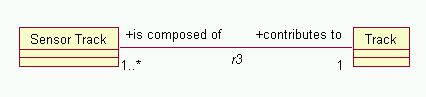

The current software architecture of ColdFrame uses Ada 95 Booch Components (BCs), which provide various ways of handling collections of things.
In ColdFrame, for each non-«singleton» Class, there's a private means of holding all the current Instances of the class, together with public interfaces allowing the creation, finding, accessing and eventual deletion of instances.
As well as this, there is public support for obtaining and handling collections of instances.
The container types used are
In all cases the actual things contained (the BC "Item") are Handles, ie pointers to instances of the class concerned. Allocation of instances is handled within the class' Create function, and deallocation in Delete.
Given the domain Domain and the class Class, the standard Component instantiations are
Because each of these is intantiated at Library level, they have to be withed individually.
ColdFrame provides three utility functions for dealing with variables of type Domain.Class.Collections.Collection, as child subprograms of Domain.Class (note, this means they have to be withed individually):
with Domain.Class.Collections; function Domain.Class.All_Instances return Domain.Class.Collections.Collection;
with Domain.Class.Collections; generic with function Pass (This : Handle) return Boolean is <>; function Domain.Class.Filter_Function (The_Collection : Domain.Class.Collections.Collection) return Domain.Class.Collections.Collection;
with Domain.Class.Collections; generic with function Pass (This : Handle) return Boolean is <>; function Domain.Class.Selection_Function return Domain.Class.Collections.Collection;
In order to support some of the more complex Navigations, ColdFrame generates Set instantiations. These are of course available for other uses. The interesting operations provided are in Domain.Class.Abstract_Sets.
Considering two Sets of Tracks (actually, Track.Handle), H containing all the Hostile tracks and C containing all the Close tracks, the operations are
| Procedure | Call | Result |
|---|---|---|
procedure Union (S : in out Abstract_Set'Class; O : Abstract_Set'Class); | Union (H, C) | H holds all the tracks which are either Hostile or Close or both. |
procedure Intersection (S : in out Abstract_Set'Class; O : Abstract_Set'Class); | Intersection (H, C) | H holds all the tracks which are both Hostile and Close. |
procedure Difference (S : in out Abstract_Set'Class; O : Abstract_Set'Class); | Difference (H, C) | H holds all the tracks which are Hostile but not Close. |
Another way of getting hold of Collections is by use of navigation functions related to associations.

In the figure, the association r3 is translated to the package Domain.R3 containing the operations
procedure Link (Contributes_To : Track.Handle; Is_Composed_Of : Sensor_Track.Handle); | Associates a Track and a Sensor Track. |
procedure Unlink (Contributes_To : Track.Handle; Is_Composed_Of : Sensor_Track.Handle); | Dissociates a Track and a Sensor Track. |
function Contributes_To (T : Track.Handle) return Sensor_Track.Collections.Collection; | Given a Track, returns the Collection of Sensor_Tracks that contribute to it. |
function Contributes_To (T : Track.Collections.Collection) return Sensor_Track.Collections.Collection; | Given a Collection of Tracks, returns the Collection of Sensor_Tracks that contribute to them. |
function Is_Composed_Of (ST : Sensor_Track.Handle) return Track.Handle; | Given a Sensor Track, return the Track that is composed of it. Other Sensor Tracks may also be contributing. |
function Is_Composed_Of (ST : Sensor_Track.Collections.Collection) return Track.Collections.Collection; | Given a Collection of Sensor Tracks, return a Collection of all the Tracks composed of these (and possibly other) Sensor Tracks. |
Two forms of iteration are supported: open and closed. Both require the creation of Iterators.
With open iterators, you explicitly advance the iterator to the next element in the container it references, until it's done; with closed iterators, you supply a procedure which gets called for each element in the container.
The operations on iterators are all defined in Domain.Class.Abstract_Containers, while actual iterators can only be created by the concrete Domain.Class.Collections.
Both examples below are in terms of a pre-existing container The_Collection:
declare
It : Class.Abstract_Containers.Iterator'Class
:= Class.Collections.New_Iterator (The_Collection);
begin
while not Class.Abstract_Containers.Done (It) loop
declare
H : Class.Handle
:= Class.Abstract_Containers.Current_Item (It);
begin
-- do something with H
end;
Class.Abstract_Containers.Next (It);
end loop;
end;
declare
procedure Process (H : Class.Handle; OK : out Boolean);
procedure Process
is new Class.Abstract_Containers.Visit (Process);
procedure Process (H : Class.Handle; OK : out Boolean) is
begin
OK := True; -- unless you want the iteration to stop early
-- do something with H
end Process;
It : Class.Abstract_Containers.Iterator'Class
:= Class.Collections.New_Iterator (The_Collection);
begin
Process (It);
end;
If you're going to use the Set operations, first catch your Set. The basic Containers used by ColdFrame (such as those produced by navigations) are Collections.
The operation that supports this conversion is provided by the generic BC.Copy.
Assuming the existence of Engaged_Tracks of type Track.Collections.Collection, we could write
declare
procedure Make_Set is new BC.Copy
(Item => Track.Handle,
Source => Track.Abstract_Containers,
From => Track.Collections.Collection,
Target => Track.Abstract_Containers,
To => Track.Sets.Set,
Clear => Track.Sets.Clear,
Add => Track.Sets.Add);
Engaged_Track_Set : Track.Sets.Set;
begin
Make_Set
(Input => Engaged_Tracks,
Output => Engaged_Track_Set);
-- operations with Engaged_Track_Set
The Booch Components provide a filtering facility (BC.Filter). However, most filtering requirements should be met by the generated Filter_Function and Selection_Function generics.
The Booch Components provide a generic sorting facility in BC.Containers.Quicksort and BC.Containers.Shellsort.
These can be instantiated for any sort of Container, but they'll
fail (with the run time exception BC.Container_Error) if you
try to
Quicksort is usually faster than Shellsort, but can take a lot more stack when the initial input Collection is inconveniently ordered.
The resulting ordering is in terms of the function that instantiates the parameter "<"; the Item that is "less than" all the other Items in the Collection will end up first.
An example of sorting by threateningness, assuming the existence of Candidate_Tracks of type Track.Collections.Collection, is
declare
function Is_More_Threatening (L, R : Track.Handle) return Boolean;
procedure Sort is new Track.Abstract_Containers.Quicksort
("<" => Is_More_Threatening,
Container => Track.Collections.Collection,
Length => Track.Collections.Length);
function Is_More_Threatening (L, R : Track.Handle) return Boolean is
begin
return L.Time_Of_CPA < R.Time_Of_CPA;
end Is_More_Threatening;
begin
Sort (Candidate_Tracks);
end;
after which Track.Collections.First (Candidate_Tracks) will
return the track with the earliest Time_Of_CPA.